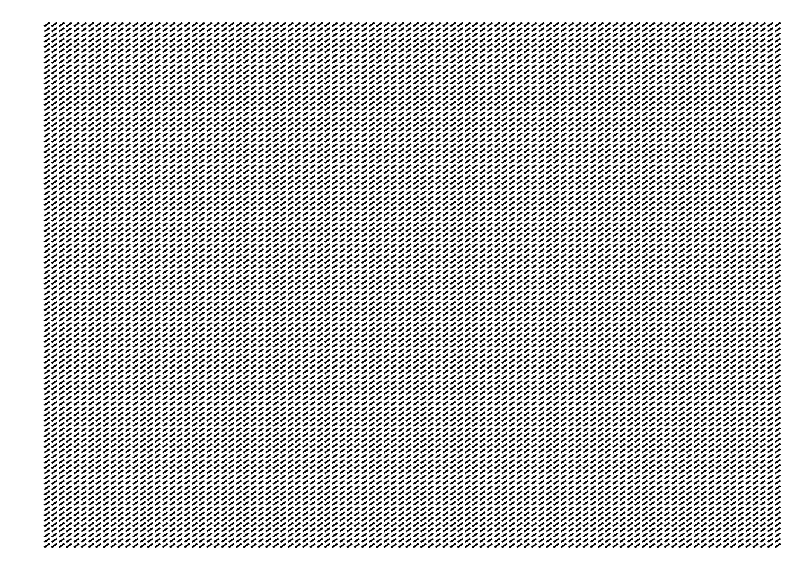
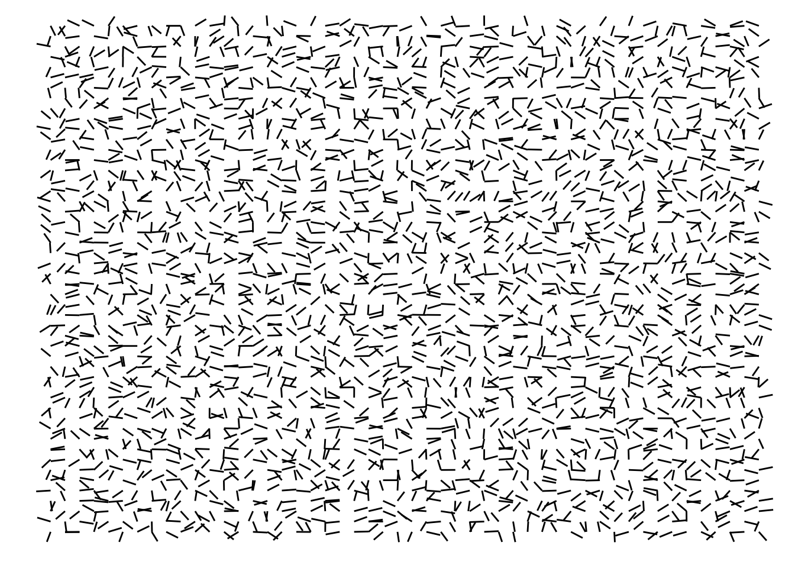
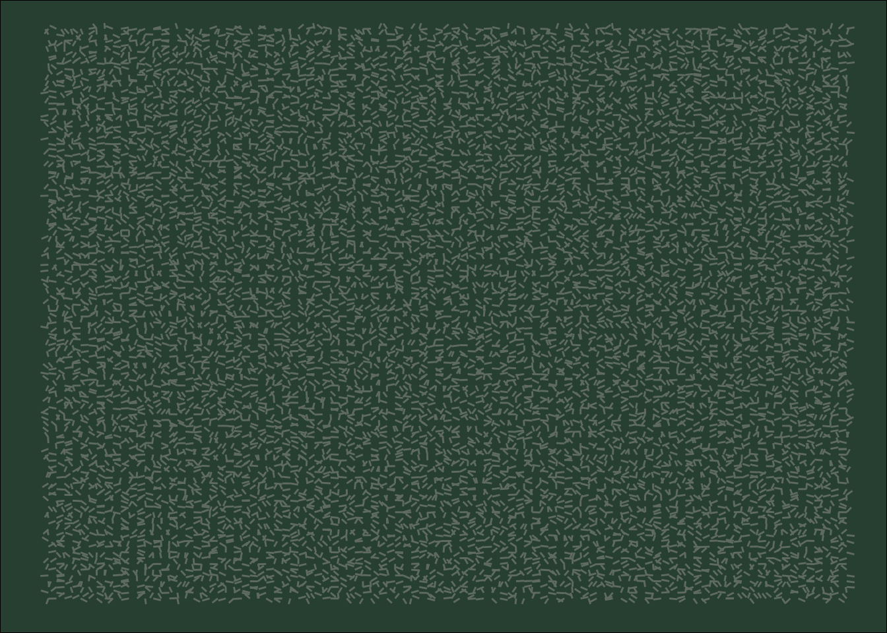
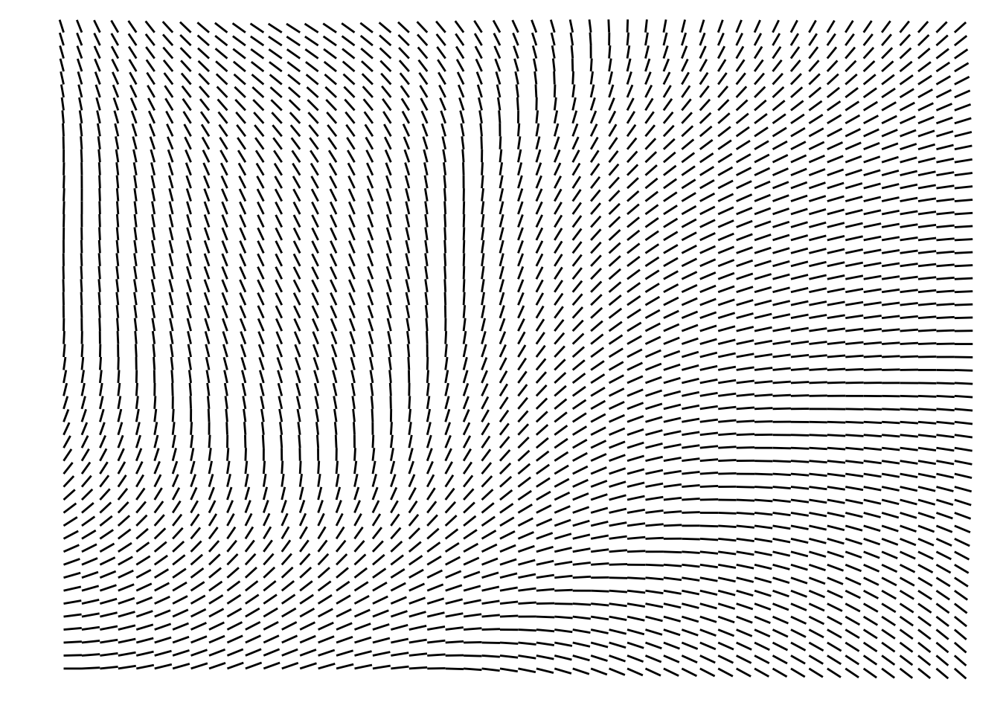
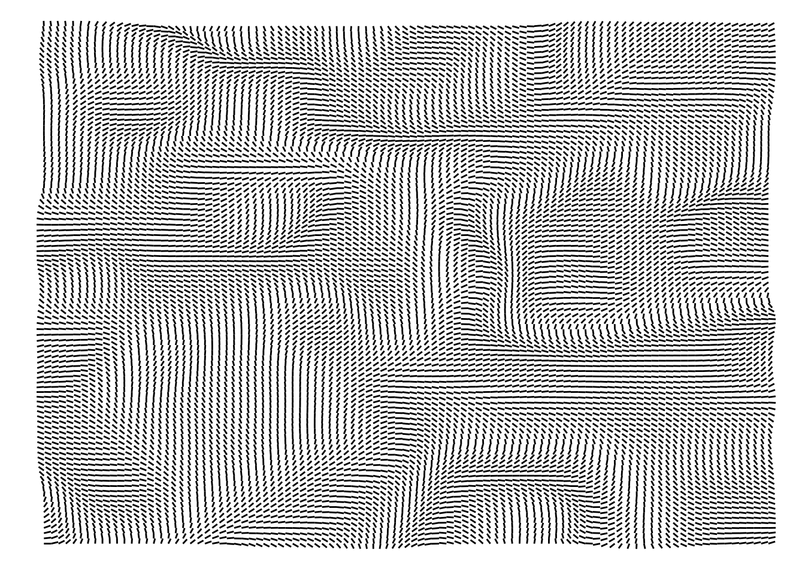

library(tibble)
build_grid_df <- function(angles, n) {
tibble(
x = rep(seq_len(n), each = n),
y = rep(seq_len(n), times = n),
value = angles |> as.vector()
)
}4 Introducing Flow Fields
Flow fields are one of the most iconic and powerful techniques used in generative art. The essential idea behind a flow field is to create a grid of angles. When a object moves through this grid, it follows the direction of the angle that is stored in the current position that this object is on the grid (Hobbs 2024).
In other words, by having a grid of angles as the basis, we basically pick a starting point somewhere in this grid, then, we start walking through this grid, by taking small steps in the direction of the angle that we are currently seeing. We walk as much as we much as we want/need to.
You could also understand flow fields as a very powerful way of creating interesting curves and paths. If your art involves these types of elements, a flow field might be the perfect technique for you.
4.1 Building a grid of angles
Let’s start with “how to create a grid of angles?”. Since we are talking about a 2D grid, with x and y coordinates, we want to store this grid either as a 2D matrix, or, as a tibble with x and y columns. To do that, you could use the exact same techniques as we used at Section 3.3, to build a 2D matrix or a tibble to store two dimensional random values.
In essence, if you prefer to build the 2D matrix, you could simply pass the vector with all the angles values in the grid to the matrix(), and specifying the number of columns and rows that you want to use.
In the other hand, if you prefer the tibble instead, we used the rep() function in conjunction with seq_len() to build the x and y coordinates columns in the tibble. The function build_grid_df() below summarizes this technique:
4.1.1 Building a fixed angle grid
Let’s start by building a grid with a fixed angle. This means that all coordinates in the grid will have the exact same angle value. So the angle is “fixed”, or “constant” across the grid.
To build such a grid, simply use a constant value across your matrix or tibble. In the example below, we are creating a 100x100 grid filled with the angle \(\pi/4\).
n <- 100
fixed_angle <- pi / 4
grid <- build_grid_df(fixed_angle, n)
grid# A tibble: 10,000 × 3
x y value
<int> <int> <dbl>
1 1 1 0.785
2 1 2 0.785
3 1 3 0.785
4 1 4 0.785
5 1 5 0.785
6 1 6 0.785
7 1 7 0.785
8 1 8 0.785
9 1 9 0.785
10 1 10 0.785
# ℹ 9,990 more rowsBut how can we can visualize this grid of angles? Well… we can draw \(100^2\) small lines with this same particular angle, and then, we spread all of these lines across the grid, using a translation operation as we presented at Section 2.1.
So, all we have to do, is to draw \(100^2\) lines that are identical (same length, same angle), and then, we apply a translation to move each individual line to a particular point in the grid. Like that:
library(tidyverse)
visualize_grid <- function(grid, n){
# Calculate the n^2 lines
grid <- grid %>%
mutate(
line_id = seq_len(nrow(grid)),
x_line = map(value, \(x) c(0, cos(x))),
y_line = map(value, \(y) c(0, sin(y))),
) %>%
unnest(c(x_line, y_line))
# Spread the lines across the grid
grid <- grid %>%
mutate(
x = x + x_line,
y = y + y_line
)
# Plot these lines
ggplot(grid) +
geom_path(aes(x, y, group = line_id)) +
coord_cartesian(
xlim = c(0,n), ylim = c(0,n)
) +
theme_void()
}
visualize_grid(grid, n)
You can see in the output above, that all lines are in the same angle. Because the angle value is constant across the grid. But a flow field with constant angle values is kind of useless. So let’s level up this game by introducing some randomness.
4.1.2 Building a random angle grid
Now, we can add a little bit of randomness to this field, by using random angle values. First, we generate \(100^2\) random values with runif().
However, we need to scale these random values. By default, runif() generates random values that are between 0 and 1. You can use these values as percentages (from 0% to 100%) to transport them into a different scale.
The radians scale goes from \(-2\pi\) to \(2\pi\), when both clockwise, and counter-clockwise movements are considered. But for this example, let’s consider solely counter-clockwise movements, which limits the scale to positive values (from zero to \(2\pi\)). So we can multiply the random values produced by runif() with \(2\pi\), to transport these random values into the radians scale.
After that, we spread these random angle values into a grid with the build_grid_df() function we created before:
set.seed(50)
angles <- runif(n ^ 2) * 2 * pi
grid <- build_grid_df(angles, n)Now that we have the grid of angles, all we have to do is to visualize it, with the visualize_grid() function that we created in the previous section. And yeah… this field is a mess, because we now have \(100^2\) lines that are in completely random angles:
visualize_grid(grid, n)
In other words, this field is simply too much random! We do need to use random values to create an actual flow field. But these random values need to have some minimal level of resemblance with each other.
But despite this being a very messy field, you may find a new utility for it. Everything depends of your creativity. For example, this field as is, might be an interesting candidate to be a soft pattern in the background of your art. In other words, this flow field might not be the main character in your art, but he might be an element to support the rest of your idea.

4.2 Building an actual flow field with Perlin Noise
At Section 4.1.2, we produced a field that was just too much random. We could hardly call that a “flow field”, because there was nothing fluid about it. The lines across the grid had no connection with each other, like a machine gun that was desperately shooting to all directions at the same time.
So now, let’s produce an actual flow field. A field of angles that actually makes sense. And for that, we are going to use the Perlin Noise algorithm (that was presented at Section 3.4) in our favor.
First thing we need to do, is to generate the grid of random values. With Perlin Noise, that is extremely easy to make, because we can easily get a 2D matrix of random values with the noise_perlin() function from the ambient R package, as we described at Section 3.4.
But this time, we need, once again, to scale these random values produced by Perlin Noise, so that they represent actual angle values, using the radians scale. To that, we simply multiply these values by \(2\pi\), in the same way as we did at Section 4.1.2.
library(ambient)Warning: package 'ambient' was built under R version 4.3.2set.seed(50)
angles <- noise_perlin(c(n, n)) * 2 * pi
grid <- build_grid_df(angles, n)
grid# A tibble: 10,000 × 3
x y value
<int> <int> <dbl>
1 1 1 0
2 1 2 0.0366
3 1 3 0.0769
4 1 4 0.123
5 1 5 0.177
6 1 6 0.239
7 1 7 0.308
8 1 8 0.384
9 1 9 0.465
10 1 10 0.550
# ℹ 9,990 more rowsAfter that, we now have a grid of angles that represents a functional flow field. We can visualize this field in the same way as we did before:
visualize_grid(grid, n)
That looks much more natural compared to the previous grids! It also feels much more fluid. Like winds flowing and doing smooth curves around this grid.
You could also use the Simplex Noise algorithm to generate the random values, instead of the classic Perlin Noise. As we described at Section 3.4, the Simplex Noise algorithmn produces “stronger” results, with random values that vary more rapidly across the grid. As a result, a flow field created from Simplex Noise is less smooth compared to a flow field created from Perlin Noise. You can see that in the example below:
set.seed(50)
angles <- noise_simplex(c(n, n)) * 2 * pi
grid <- build_grid_df(angles, n)
visualize_grid(grid, n)